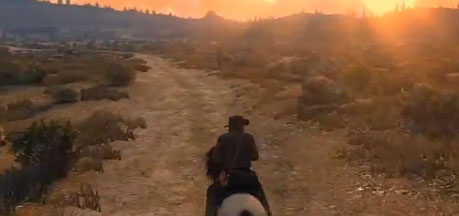

Red Dead Redemption 2(pictured above) has recieved multiple nominations at The Game Awards 2018, and nearly winning Game of the year
The origins and about the RPG genre.
The origins and about the RPG genre.
Role-playing video games draw their gameplay from traditional (not always)) role-playing games like Dungeons & Dragons. Most of these games cast the player in the role of one or more "adventurers" who specialize in specific skill sets (such as melee combat or casting magic spells) while progressing through a predetermined storyline. Many involve manoeuvring these character(s) through an overworld, usually populated with monsters, that allows access to more important game locations, such as towns, dungeons, and castles. Since the emergence of affordable home computers coincided with the popularity of paper and pencil role-playing games, this genre was one of the first in video games and continues to be popular today. Gameplay elements strongly associated with RPG, such as statistical character development through the acquisition of experience points, have been widely adapted to other genres.
